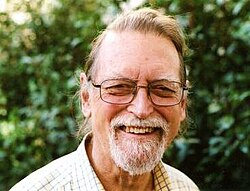
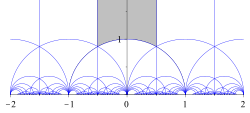

David Mumford | |
|---|---|
 David Mumford in 2010 | |
| Born | 11 June 1937 |
| Alma mater | Harvard University |
| Known for | Algebraic geometry Mumford surface Deligne-Mumford stacks Mumford–Shah functional[1] |
| Awards | Putnam Fellow (1955, 1956) Sloan Fellowship (1962) Fields Medal (1974) MacArthur Fellowship (1987) Shaw Prize (2006) Steele Prize (2007) Wolf Prize (2008) Longuet-Higgins Prize (2005, 2009) National Medal of Science (2010) BBVA Foundation Frontiers of Knowledge Award (2012) |
| Honours | |
| Scientific career | |
| Fields | Mathematics |
| Institutions | Brown University Harvard University |
| Thesis | Existence of the moduli scheme for curves of any genus (1961) |
| Oscar Zariski | |
Doctoral students | Avner Ash Henri Gillet Ching-Li Chai Tadao Oda Emma Previato Malka Schaps Michael Stillman Jonathan Wahl Song-Chun Zhu |
David Bryant Mumford (born 11 June 1937) is an American mathematician known for his work in algebraic geometry and then for research into vision and pattern theory. He won the Fields Medal and was a MacArthur Fellow. In 2010 he was awarded the National Medal of Science. He is currently a University Professor Emeritus in the Division of Applied Mathematics at Brown University.
Mumford was born in Worth, West Sussex in England, of an English father and American mother. His father William Bryant Mumford was educated at Manchester Grammar School and took the Mathematical Tripos at St John's College, Cambridge;[3] as his mother Edith Emily Read had done at Girton College.[4][5] He started an experimental school in the colonial Tanganyika Territory and at the time of his death in 1951 worked in the United Nations Department of Public Information.[6][7] He married in 1933 Grace Schiott of Southport, Connecticut, and the couple had five children.[8]
Mumford first went to Unquowa School.[9] He attended Phillips Exeter Academy, where he received a Westinghouse Science Talent Search prize for his relay-based computer project.[10][11] Mumford then went to Harvard University, where he became a student of Oscar Zariski. At Harvard, he became a Putnam Fellow in 1955 and 1956.[12] He completed his PhD in 1961, with a thesis entitled Existence of the moduli scheme for curves of any genus.[13]
After a career at Harvard, Mumford moved to Brown University in 1996, concentrating on applied mathematics.[14][15]
Mumford's work in geometry combined traditional geometric insights with contemporary algebraic techniques.
Mumford published on moduli spaces, with a theory summed up in his book Geometric Invariant Theory.
At the International Congress of Mathematicians in 1974, John Tate said:
Mumford's major work has been a tremendously successful multi-pronged attack on problems of the existence and structure of varieties of moduli, that is, varieties whose points parametrize isomorphism classes of some type of geometric object.[16]

The moduli space of curves of a given genus g was already considered in complex algebraic geometry during the 19th century. When g = 1 the number of moduli is 1 also, the term coming from the elliptic modulus function of the theory of Jacobi elliptic functions. Bernhard Riemann contributed the formula, when g ≥ 2, for the number of moduli, namely 3g−3, a consequence, in deformation theory, of the Riemann-Roch theorem.[17]
The theory of abstract varieties, as Mumford showed, can be applied to provide an existence theorem for moduli spaces of curves, over any algebraically closed field. It therefore answers the question of in what sense there is a geometric object, with an algebraic definition, that parametrizes algebraic curves, so generalizing the modular curves, having the predicted dimension. In a summary provided by Jean Dieudonné, making use of scheme theory, the steps are:[18]
In the introduction to his 1965 book Geometric Invariant Theory, Mumford described the construction of "moduli schemes of various types of objects" as essentially "a special and highly non-trivial case" of the problem "when does an orbit space of an algebraic scheme acted on by an algebraic group exist?". For this area, see algebraic invariant theory.[19] David Gieseker later distinguished, for step #2, going via Torelli's theorem, which was Mumford's original method, and the alternative approach via the Chow point of a curve C, in its projective canonical embedding, which proves the stability of this point.[20]
The concept of stable vector bundle from moduli theory has been consequential in mathematical physics: "This is a mathematical notion of stability, but it also corresponds to physical stability, at least in a regime in which quantum corrections are small."[21]
Before the mathematical concept of stack had been defined, Mumford gave a detailed treatment of the moduli stack of elliptic curves, in his paper Picard Groups of Moduli Problems. In it, he made a calculation of (the analogue of) the stack's Picard group.[22] Hartshorne wrote that, in the paper, Mumford
[...] makes the point that to investigate the more subtle properties of curves, the coarse moduli space may not carry enough information, and so one should really work with stacks.[17]
In three papers written between 1969 and 1976 (the last two in collaboration with Enrico Bombieri), Mumford extended the Enriques–Kodaira classification of smooth projective surfaces from the case of the complex ground field to the case of an algebraically closed ground field of characteristic p. The four classes are:[23][24][25]
Mumford wrote on an algebraic approach to the classical theory of theta functions, the theta representation, showing that its algebraic content was large, with resulting finite analogues of the Heisenberg group.[26] This work on the equations defining abelian varieties appeared in 1966–7. He also is one of the founders of the toroidal embedding theory, the geometric approach to varieties defined by monomials.[27] With Dave Bayer he published a paper "What can be computed in algebraic geometry?" in 1993 on computation and algebraic geometry, in which Gröbner basis techniques are fundamental.[28] The concept of Castelnuovo–Mumford regularity has been employed as a complexity measure for Gröbner bases.[29]
In a paper published in 1989, Mumford and Jayant Shah showed that a numerical method could tackle image segmentation, using what became known as the Mumford–Shah functional. In the Handbook of Mathematical Methods in Imaging (2011) the functional was called "classical", and the method described as an energy minimization approach allowing optimal computation for piecewise function solutions.[30][31][32] Another assessment in 2024 was "a foundational approach for partitioning an image into meaningful regions while preserving edges."[33]
Following work of Shimon Ullman who brought in variational methods, and Berthold K.P. Horn, Mumford in 1992 addressed the amodal completion problem with concepts from elastica theory.[34] In the 1990s, Song-Chun Zhu at the University of Science and Technology of China, attracted into the field by the book Vision (1982) by David Marr, studied computer science under Mumford.[35]
In 2002, Mumford and Tai Sing Lee proposed a model for the visual cortex, influenced by work on pattern theory by Ulf Grenander.[36][37] The book chapter "The Evolving Concept of Cortical Hierarchy" from 2023 by Vezoli, Hou and Kennedy states that Mumford's "Bayesian computational approach to cortical hierarchy was revolutionary".[38] The 2023 book by Zhu and Wu, Computer Vision: Statistical Models for Marr's Paradigm, in its Preface lists as "pioneers of vision" Béla Julesz and King-Sun Fu, with Grenander, Maar and Mumford.[39]
In 1962 Mumford was appointed an assistant professor at Harvard.[40] He decided to give a lecture course on a topic in the area of curves on an algebraic surface, to illustrate the importance of the innovative approach in algebraic geometry of Alexander Grothendieck, based at IHES near Paris.[41] The class notes of this course, given 1963–4, were published in 1966 as Lectures on Curves on an Algebraic Surface, and in the Introduction Mumford wrote that the goal was to give an exposition of a "corollary" in Bourbaki seminar #221 given by Grothendieck in early 1961, Techniques de construction et théorèmes d'existence en géométrie algébrique. IV : Les schémas de Hilbert, in the TDTE series. It related to a vexed question in the legacy of the Italian school of algebraic geometry, called the "completeness of the characteristic system" of a suitable algebraic system of curves. The issue was of a possible "pathology", and the burden of the course was to show that a necessary and sufficient condition for the validity of the theorem was now available.[42] In parallel, Robin Hartshorne was leading a seminar at Harvard, "Residues and Duality", on coherent duality in Grothendieck's derived category setting, in which Mumford, Tate, Stephen Lichtenbaum and others participated.[43]
Mumford's lecture notes on scheme theory circulated for years in unpublished form. A geometric motivation for the theory brought forward by Mumford was "infinitesimals well adapted to algebraic and geometric structures."[44] In 1979 in the Bulletin of the American Mathematical Society a reviewer wrote of this work that it "initiated a generation of students to the subject when nothing else was available."[45] At the time, they were, beside the treatise Éléments de géométrie algébrique, the only accessible introduction.
Starting in 1967, the notes were mimeographed, bound in red cardboard, and distributed by Harvard's mathematics department under the title Introduction to Algebraic Geometry (Preliminary version of first 3 Chapters). Later (1988; 1999, 2nd ed., ISBN 3-540-63293-X), they were published by Springer under the Lecture Notes in Mathematics series as The Red Book of Varieties and Schemes. In an introduction to the 1988 edition, Mumford wrote
[...] Grothendieck came along and turned a confused world of researchers upside down, overwhelming them with the new terminology of schemes as well as with a huge production of new and very exciting results. These notes attempted to show something that was still very controversial at that time: that schemes really were the most natural language for algebraic geometry [...][46]
In Lectures on Curves on an Algebraic Surface, Mumford wrote "by far the most important categorical notion for algebraic geometry is that of fibre product."[47] Lectures 3 and 4 (with its Appendix on the Zariski tangent space) were a concise introduction to the circle of ideas, based on scheme theory (the book uses the older terminology of pre-schemes) known as Grothendieck's relative point of view, with geometric illustrations. The representable functor point of view is central: Mumford illustrates it by citing contemporary research: Brown's representability theorem in homotopy theory, where representable functors are clearly distinguished; Tate's rigid analytic spaces; Jaap Murre's work on functors to the category of groups; and Teruhisa Matsusaka's theory of Q-varieties as an extension of the functors considered.[48]
Grothendieck made a case for the "representable functor" approach to replace the universal object conceptualization then prevalent in category theory. For moduli spaces, the classical idea of a "universal family of curves" would therefore be modified to a functor "of curves", with a proof that it was representable. The satisfactory picture from homotopy theory, of a universal bundle with base space a classifying space that represents bundles does not, however, apply directly to moduli. Hence the distinction between a "coarse moduli space", via its geometric points a universal object, and a fine moduli space which represents a functor of all parametrized families of curves. The latter is in line with the "relative point of view". In Geometric Invariant Theory Mumford laid out the issues for moduli theory, stating that currently "one knows very few ways in which to pose a plausible fine moduli problem." He went on to state that in technical terms the fine moduli problem was not "essentially harder", given "descent machinery", a reference to the role descent morphisms play.[49]
This background explains why faithfully flat descent is introduced in Lecture 4 of Lectures on Curves on an Algebraic Surface: as a necessary condition for representability of a functor. Mumford names the representability issue for schemes "Grothendieck's existence problem", a nod to Riemann's existence theorem and to Grothendieck's existence theorem for formal schemes.[48] Mumford's remark about fibre products may be unpacked in later terms of Grothendieck fibrations and descent theory.[50][51] He went much further into the relative theory, in defining "modular families" of curves via Grothendieck topologies, in Picard Groups of Moduli Problems.[52]
The lacuna of the mid-1960s theory in terms of sufficient conditions for representability of functors, as would apply to moduli problems, was filled through work of Michael Artin and others by 1969. There were two sides to this advance. (1) Further innovation in the foundations came with algebraic spaces (more general than schemes but more restricted than Matsusaka's Q-varieties or Mumford's stacks). Algebraic spaces allow more quotients by equivalence relations than schemes. (2) This definition was combined with a thorough use of algebraic infinitesimal techniques around artinian rings (commutative and local). See Artin's criterion, formal moduli, Schlessinger's theorem.[53][54]
Mumford was awarded a Fields Medal in 1974. He was a MacArthur Fellow from 1987 to 1992. He won the Shaw Prize in 2006. In 2007 he was awarded the Steele Prize for Mathematical Exposition by the American Mathematical Society. In 2008 he was awarded the Wolf Prize;[55] on receiving the prize in Jerusalem from Shimon Peres, Mumford announced that he was donating half of the prize money to Birzeit University in the Palestinian territories and half to Gisha, an Israeli human rights organization.[56][57] In 2010 he was awarded the National Medal of Science.[58] In 2012 he became a fellow of the American Mathematical Society.[59]
Further awards and honors include:
Mumford was elected President of the International Mathematical Union in 1995 and served from 1995 to 1999.[55]
Mumford's books Abelian Varieties (with C. P. Ramanujam) and Curves on an Algebraic Surface combined the old and new theories.
{kind=link}
{kind=link}
{kind=link}